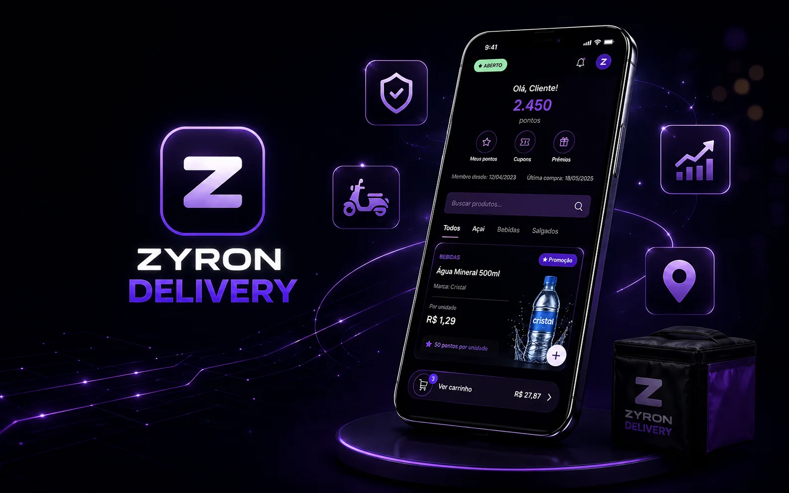
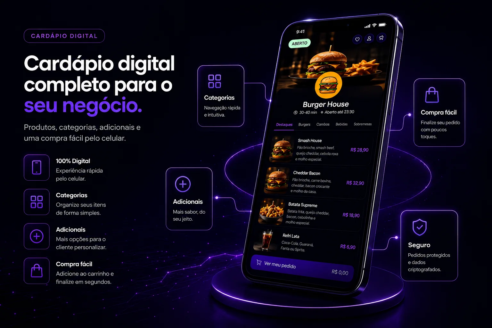
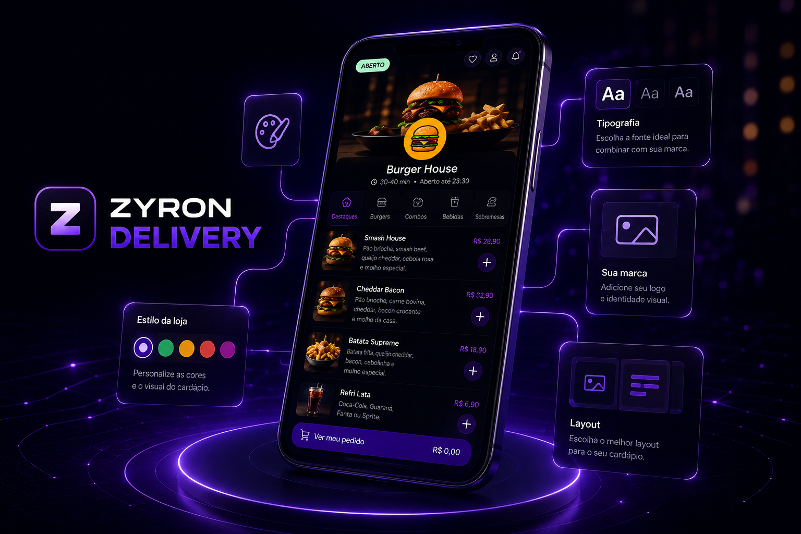
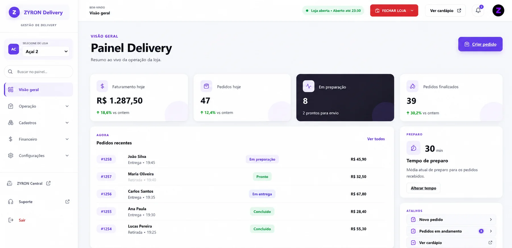

Pedidos centralizados
Reduza mensagens perdidas e acompanhe cada pedido com mais clareza.
ZYRON DELIVERY
Uma plataforma profissional para negócios de alimentação venderem online, reduzirem erros e acompanharem a operação com mais clareza.

Pedidos online sem complicação Mais controle da operaçãoUma estrutura flexível para diferentes formatos de atendimento e operação.
MENOS IMPROVISO
O ZYRON Delivery conecta a experiência do cliente à rotina da equipe, reunindo informações importantes em um só ambiente.
Reduza mensagens perdidas e acompanhe cada pedido com mais clareza.
Altere produtos, preços, adicionais e promoções sem depender de material impresso.
Visualize vendas, clientes, caixa, entregas e indicadores em um único sistema.
DEMONSTRAÇÃO VISUAL
Do primeiro acesso ao acompanhamento da operação, cada etapa é pensada para ser clara e rápida.



Recursos reunidos para vender, atender e administrar com mais eficiência.
Acesso rápido em celulares, tablets e computadores.
Uma jornada objetiva para transformar visitas em pedidos.
Organize categorias, complementos, disponibilidade e promoções.
Acompanhe o andamento do pedido do recebimento à entrega.
Tenha mais clareza sobre entradas, vendas e movimentações.
Indicadores para entender resultados e tomar decisões melhores.
IMPLANTAÇÃO
Conhecemos sua rotina, necessidades e modelo de atendimento.
Personalizamos identidade, cardápio e regras da operação.
Testamos o fluxo e preparamos o sistema para começar a vender.
Acompanhamos a implantação e os próximos ajustes.
DÚVIDAS FREQUENTES
A página apresenta a proposta geral. Na conversa, adaptamos a solução à realidade do seu negócio.
Sim. O cardápio é responsivo e pode ser acessado diretamente pelo navegador.
Sim. Cores, imagens e apresentação podem ser configuradas para representar sua marca.
Não. A estrutura pode atender balcão, retirada, consumo local e entregas, conforme a operação.
O investimento depende da configuração necessária. A demonstração ajuda a definir o escopo ideal.
PRÓXIMO PASSO
Conte como sua operação funciona e receba uma demonstração direcionada às suas necessidades.
Agendar demonstração